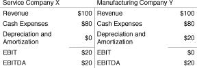

EBITDA Analysis Obscures the Difference between Good and Bad Businesses
EBITDA, in addition to being a flawed measure of cash flow, also masks the relative importance of the several components of corporate cash flow. Pretax earnings and depreciation allowance comprise a company’s pretax cash flow; earnings are the return on the capital invested in a business, while depreciation is essentially a return of the capital invested in a business. To illustrate the confusion caused by EBITDA analysis, consider the example portrayed in exhibit 1.
Exhibit 1
Companies X and Y
Income Statement for 1990 ($ in millions)

Investors relying on EBITDA as their only analytical tool would value these two businesses equally. At equal prices, however, most investors would prefer to own Company X, which earns $20 million, rather than Company Y, which earns nothing. Although these businesses have identical EBITDA, they are clearly not equally valuable. Company X could be a service business that owns no depreciable assets. Company Y could be a manufacturing business in a competitive industry. Company Y must be prepared to reinvest its depreciation allowance (or possibly more, due to inflation) in order to replace its worn-out machinery. It has no free cash flow over time. Company X, by contrast, has no capital-spending requirements and thus has substantial cumulative free cash flow over time.
Anyone who purchased Company Y on a leveraged basis would be in trouble. To the extent that any of the annual $20 million in EBITDA were used to pay cash interest expense, there would be a shortage of funds for capital spending when plant and equipment needed to be replaced. Company Y would eventually go bankrupt, unable both to service its debt and maintain its business. Company X, by contrast, might be an attractive buyout candidate. The shift of investor focus from after-tax earnings to EBIT and then to EBITDA masked important differences between businesses, leading to losses for many investors.